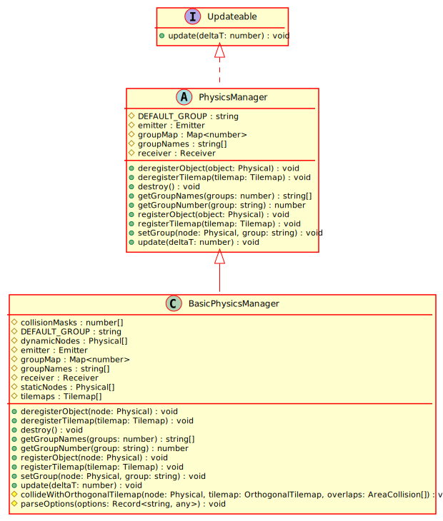

Hierarchy-Diagram
{kind=link}
Legend
 class
class
 abstract class
abstract class
 interface
interface
 protected property
protected property
 public method
public method
 protected method
protected method
Hierarchy
- PhysicsManager
Implements
Index
Constructors
constructor
Returns PhysicsManager
Properties
Protected emitter
The event emitter for the physics system
Protected group
Maps layer names to numbers
Protected group
Maps layer numbers to names
Protected receiver
The event receiver for the physics system
Static Protected Readonly DEFAULT_
The default group name
Methods
Abstract deregister
Removes references to this object from the physics managerr
Parameters
object: Physical
The object to deregister
Returns void
Abstract deregister
Removes references to this tilemap from the physics managerr
Parameters
tilemap: Tilemap
The object to deregister
Returns void
destroy
Returns void
get
Gets all group names associated with the number provided
Parameters
groups: number
A mask of groups
Returns string[]
All groups contained in the mask
get
Retrieves the layer number associated with the provided name
Parameters
group: string
Returns number
The layer number, or 0 if there is not a layer with that name registered
Abstract register
Registers a gamenode with this physics manager
Parameters
object: Physical
The object to register
Returns void
Abstract register
Registers a tilemap with this physics manager
Parameters
tilemap: Tilemap
The tilemap to register
Returns void
set
Sets the physics layer of the GameNode
Parameters
node: Physical
The GameNode
group: string
The group that the GameNode should be on
Returns void
Abstract update
Updates this object.
Parameters
deltaT: number
Returns void
An abstract physics manager. This class exposes functions for subclasses to implement that should allow for a working physics system to be created.